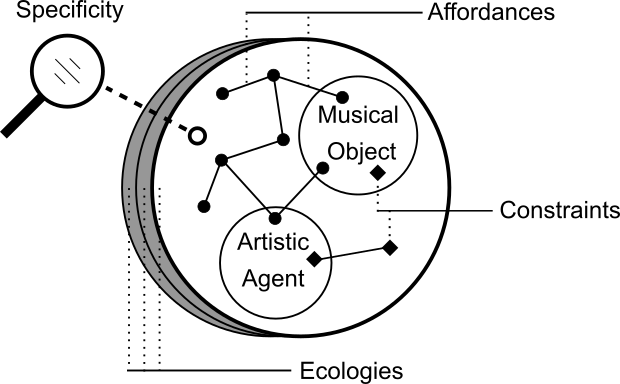
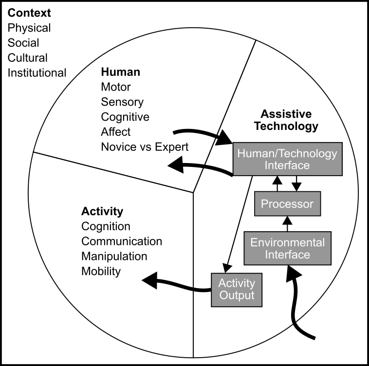
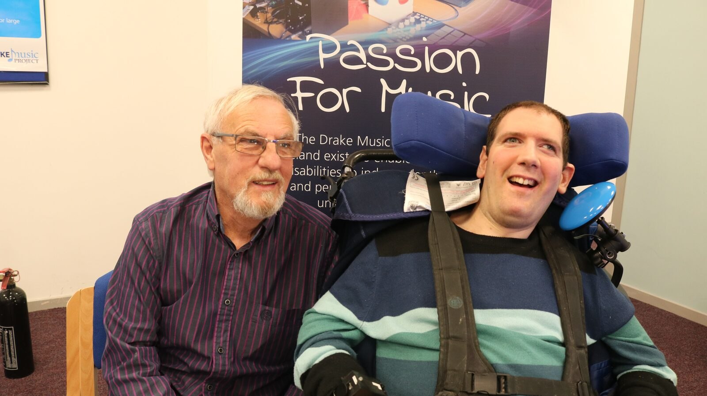
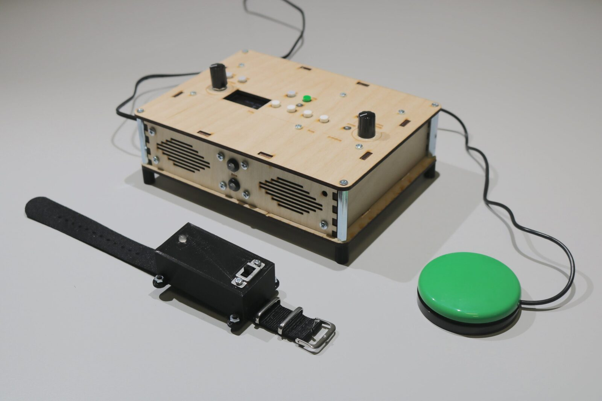
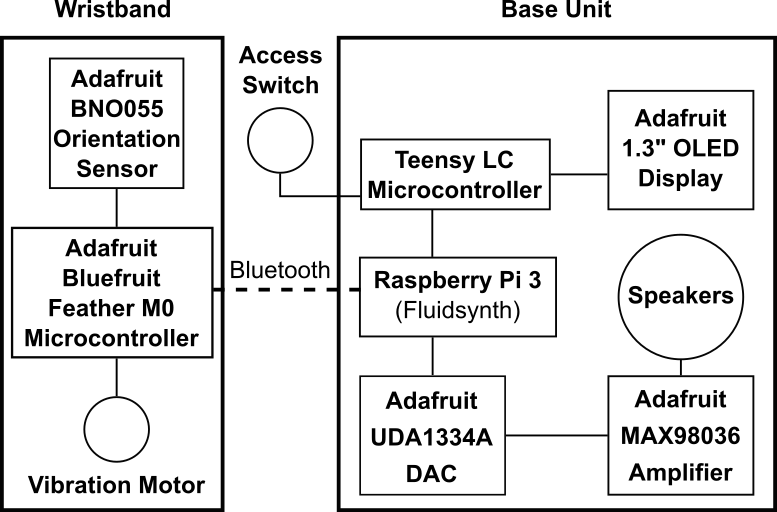
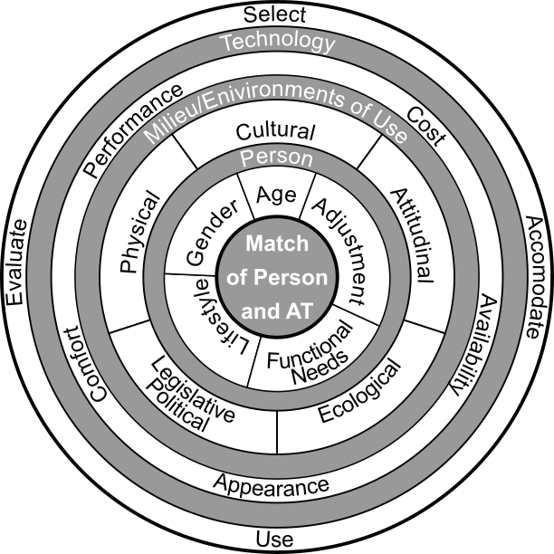
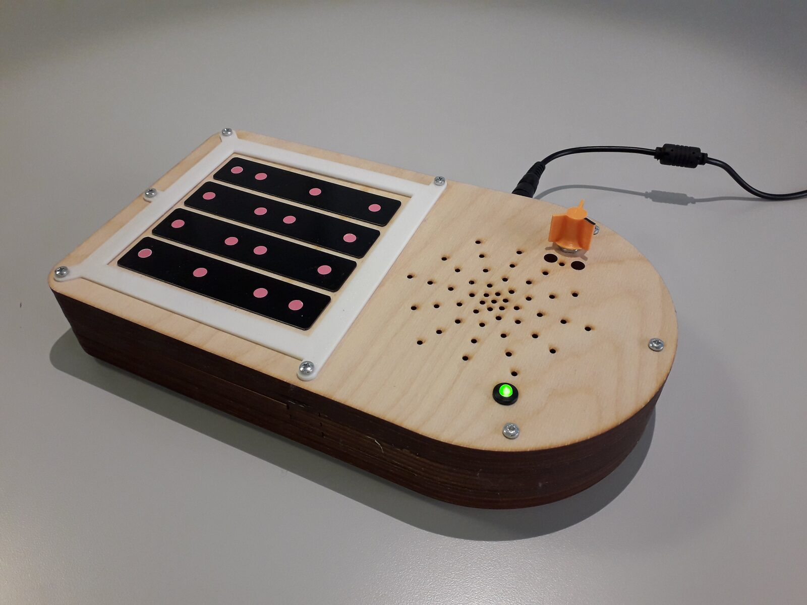
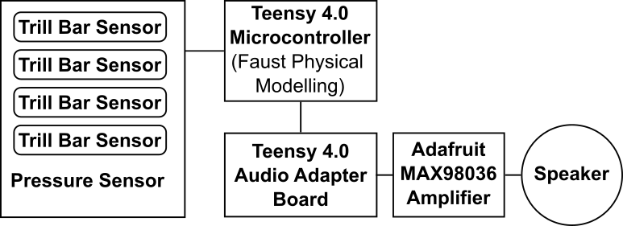

Cross-Pollinating Ecological Perspectives in ADMI Design and Evaluation
Abstract
This paper explores ecological perspectives of human activity in the use of digital musical instruments and assistive technology. While such perspectives are relatively nascent in DMI design and evaluation, ecological frameworks have a long-standing foundation in occupational therapy and the design of assistive technology products and services. Informed by two case studies, the authors' critique, compare and marry concepts from each domain to guide future research into accessible music technology. The authors discover that ecological frameworks used by occupational therapists are helpful in describing the nature of individual impairment, disability and situated context. However, such frameworks seemingly flounder when attempting to describe the personal value of music-making.
Author Keywords
Accessibility, Affordances, AMDI, AMT, Disability, Ecology, HAAT, MPT
CCS Concepts
Applied computing → Accessibility design and evaluation methods;
Applied computing → Sound and music computing;
Human-centered computing → HCI theory, concepts and models;
Introduction
Occupational therapy is a discipline concerned with improving the participation of disabled people in daily activities (i.e. occupations)[1]. Following an initial assessment, an intervention will often amount to the recommendation of assistive technology (AT), followed by ongoing evaluation of particular outcomes. The World Health Organisation states that:
“Assistive [...] technologies are those whose primary purpose is to maintain or improve an individual's functioning and independence to facilitate participation and enhance overall well-being” [2].
Such technologies are, of course, applicable to the occupation of music-making.
In 2019 Emma Frid published a literature review, identifying research publications related to Accessible/Adapted Digital Musical Instruments (ADMIs). As part of her observations, Frid noted an increase in published ADMI research from 1990 to 2018 [3]. In assistive technology, some state that we already know how to make many devices accessible [4]. There are, however, still several questions to answer surrounding ADMIs and accessible music technologies (AMTs). For instance, the challenging question of - how does a promising ADMI, developed as a research product [5], achieve sustained use beyond the confines of an academic study? It is timely to consider the approach taken in the design and evaluation of ADMIs and AMTs. This paper aims to extend the discussion in this research area. In doing so, the authors hope to contribute towards improved outcomes for disabled artists.
Ecological Perspectives in DMI Design and Evaluation
Matthew Rodger et al. highlight the issues inherent in borrowing classical human-computer interaction (HCI) techniques to design and evaluate musical instruments [6]. Their argument distils to the following. The terms user and device are ill-suited to describing the rich and subtle attributes of individual musicians and musical instruments, respectively, their situated environment and the reciprocal and co-constituting relationship of the three. Therefore, HCI task-based evaluation overlooks and potentially distorts the true nature of such activities. The DMI designer will struggle to understand a musical object's personal and socio-cultural value by measuring narrow attributes, such as usability. Rodger et al. propose an ecological reframing of musical instrument conceptualisation for design and evaluation purposes. Below the authors present a truncated interpretation and minor extension of Rodger et al.'s argument, focussing on elements that hold importance for observations presented later in this paper.
Designer and Cognitive Scientist Norman describes an affordance as a relationship between a physical object and any interacting agent [7]. In music-making, a musical instrument is a physical object; a musician is an interacting agent. Consider a string in tension between the nut and bridge of a violin. This string affords plucking (or pizzicato playing) but only to a musician with the requisite skill and functional capabilities. Such properties of individual agents are known as effectivities. The critical observation here is that an affordance is not a sole property of the string, nut, bridge or musician but exists in the relationship between them. Remove one element, and the affordance crumbles. Affordances are not isolated; instead, they group in intricate constellations. For instance, besides pluck force and position, the violin's timbral character depends on a complex network of constructive and deconstructive acoustic interference. This interference exists in affordances between the materials of the violin's components and the physical environment.
When we begin to question why the musician is playing the violin in the first instance, people and their personal histories, beliefs and biases enter the purview with social and cultural factors in tow. The musician could be a novice, practising their technique at home, playing with reserve, mindful not to wake the neighbours' sleeping baby. Perhaps a frustrated professional musician is going off-piste, playing a scored classical piece with exaggerated articulation to cut through the hubbub of restaurant patrons.
Constraints are somewhat of an antithesis to the notion of affordances. In the preceding examples, constraints exist in the relationship between the musician and the social-cultural environment, impacting music-making activities. Constraints can be used advantageously in design. The use of deliberate physical constraints in DMI design has shown to broaden diversity in playing styles and increase the likelihood of hidden affordance discovery [8]. Furthermore, this observation holds in inclusive music settings [9]. All musical activity exists in an ecosystem containing the constitutional building blocks of affordances and constraints. There is no prototypical user; we are all unique, as are individual music-making ecologies. So how does one approach evaluating new designs in such complex and multidimensional phenomena? Rodger et al. make the proposition of measuring specificities, i.e. specific attributes of the ecosystem, related to a context-of-interest.


The Musical Ecologies Perspective (MEP)
The conceptual model in Image 1 is a simple illustration of this ecological perspective. Here an artistic agent and musical object are depicted within one of several potential ecologies. Within any ecology exists a constellation of affordances, connecting the artistic agent and musical object and specific constraints. Specificities focus on particular attributes of the ecology for evaluation purposes. Herein the authors will refer to the description of music-making ecologies above as the musical ecologies perspective (MEP).
It is interesting to note that ecological perspectives have been a standard fixture of frameworks used to recommend, design and evaluate assistive technology products and services since 1995. For example, both the Human Activity Assistive Technology (HAAT) [4], Matching Person and Technology (MPT) [10] frameworks stem from ecological principles. These frameworks emphasise the importance of understanding ATs context of use; to reduce the likelihood of unsuitable technology being designed or recommended to an individual. In line with the Social Model of Disability [11], enablers and barriers to participation in many activities are likely to exist external to the individual.
As part of two longitudinal ethnographic case studies, the authors have deployed the HAAT and MPT frameworks to design and evaluate bespoke ADMIs. Many consider these frameworks effective in reducing AT abandonment rates, a pervasive issue with AT [12] and, incidentally, within the NIME community [13] [14], and a specificity of concern to the authors [15]. Each study involved a disabled musician participating in designing an ADMI tailored toward removing the access barriers they encounter in music-making. The musicians used the instruments over two months to help identify factors contributing to sustained use. Examples from these case studies interlace the description of the two frameworks. As we will see, there is much in common between the MPT and HAAT frameworks and the MEP and some key distinctions that are likely critical in music-making pursuits.
Ecological Facets of the Human Activity Assistive Technology Framework.


Human Activity Assistive Technology (HAAT) Framework. (Redrawn from Cook & Polgar, 2015)
As depicted by the conceptual model in Image 2, the HAAT model consists of four interconnected elements; the human, activity, assistive technology and the situated context of the three. Although subtle, using the term human instead of user is an unintended nod in the MEP direction. Assistive technology is deliberately placed at the end of the HAAT acronym, encouraging those implementing the framework to prioritise the human and activity [4]. Such an approach benefits greatly from participatory design practices (i.e. the involvement of intended users as stakeholders in the design process) [16]. While Cook and Polgar comprehensively describe HAAT components, they provide no rigid mechanisms for applying the framework. The key intention is for the HAAT components to signpost critical areas for consideration in the design and evaluation of AT.
It is challenging to capture the complexities of the human condition through prescribed attributes—nevertheless, the HAAT framework makes an attempt. The human component separates into three distinct categories of impairment; motor, sensory and cognitive. Emphasis is on understanding human function in each category. However, as successful AT use transcends rudimentary matching of features to functional impairments, the human component extends to personal feeling, emotion and mood (i.e. affect) and experience level (i.e. novice vs expert). Cook and Polgar acknowledge that all human component attributes are mutable; singular assessments merely form a snapshot in time.


Peter and Eoin Fitzpatrick
Here is an ideal place to introduce disabled musician and composer Eoin Fitzpatrick, the primary participant in the first case study, pictured with his father, Peter, in Image 3. Eoin and the primary author collaboratively designed Instrument One1; a bespoke, motion-controlled digital guitar, pictured in Image 4. Image 5provides a high-level technical overview of Instrument One. For ADMI design purposes, it seems remiss to describe Eoin in terms of functional capabilities before noting aspects of his personality, aesthetic tendencies, and music-making history. In his mid-thirties, Eoin has a fluent understanding of the Spanish language and an immense love of Star Wars; members of both the Empire and Rebel Alliance adorn the spoke guards of his wheelchair. This cinematic interest extends to an appreciation of film music, particularly that of composer John Williams. Eoin also enjoys classic rock bands Queen, ABBA and The Beatles. Before social-distancing restrictions, he would often attend the concerts of Belfast-based tribute acts such as Freddie Mercury impersonator Flash Harry2. Eoin's musical interests also encompass the genres of hip-hop and drum and bass. He has been making music with the Drake Music Project Northern Ireland3 (DMNI) since 2016, as a member of electronic music outfit the Wired Ensemble4.


Instrument One (i1): A Bespoke Digital Guitar.


Instrument One: High-Level Schematic
Familiarity with Eoin results in a more precise understanding of his impairments. He can move his head, side-to-side, over 90 degrees and each arm from the armrest of his wheelchair to his chest. Eoin's upper-body movements are slow. At times, there is a pause before the execution of an action. Eoin occasionally experiences involuntary movements. For example, when moving an arm, he might find it difficult not to move his head.
Eoin has an intermediate level of knowledge and experience in electronic music production. In describing the HAAT model, Cook and Polgar reference the concept of situated knowledge (i.e. all human knowledge is biased and a result of individual and collective embodiment) [17]. Therefore, as with everyone, the knowledge Eoin possesses is inseparable from its social context. The primary author's subjective opinion is that Eoin has a relatively cheerful disposition, forming an assessment of personal affect. Eoin was, therefore, in a strong position for exploring new technologies through trial and error.
The primary author had made an incorrect assumption - stated in previous literature - that personal goals were an inherent part of the human component [15]. Naturally, there is a degree of overlap between the HAAT components. However, it appears that Cook and Polgar intend to signpost and capture personal goals through the activity component instead. The activity categories are cognition, communication, manipulation and mobility. The activity targeted in this case study was that of composing with and playing electric guitar. Even this oversimplified description of musical pursuit fails to fit squarely into Cook and Polgar's categories of activity; it instead encompasses all four. One, therefore, can question the value of such a taxonomy. Perhaps more helpful is an acknowledgement, at the outset, that cognition, communication, manipulation and mobility are all intrinsic facets of interacting with musical objects.
Cook and Polgar are keen to understand the meaning of activity beyond its classification. Here is where personal goals emerge. Questions such as "why is this activity performed?" "how is the activity performed?" "where is the activity performed?" and "how frequent is the activity?" are used for further understanding. All human activity has personal meaning, which may change over time. A series of user stories such as the one below captured Eoin's goals. This specific user story suggests standalone operation and portability.
"When musical creativity strikes, I want to be able to use my instrument regardless of whether I am at home or the studios of Drake Music."
The HAAT model utilises the distinction between hard and soft assistive technologies first introduced by J. P. Odor [18]. This division helps understand factors that contribute toward longevity and sustained use of ADMIs. Hard assistive technology comprises physical technology (e.g. computer access switches or braille displays) and, albeit somewhat confusingly, software (e.g. screen reading applications). Instrument One is a hard assistive technology. Conversely, soft assistive technologies support the use of their hard counterparts. Soft AT includes written manuals and product websites and less tangible items such as technical support, training provision and family and carers in a support role.
During DMNI music sessions, Access Music Tutor Daniel supports Eoin. At home, Peter supports Eoin in the use of technology. Both Daniel and Peter can, therefore, be considered soft technologies. The primary author was yet another soft technology, providing Eoin, Peter and Daniel with training and support in the use of Instrument One. The primary author's design activities (i.e. planning and organising design sessions, fabricating prototypes) can be considered another form of support in this research project. A glimpse of the overall ecosystem in which Instrument One was first realised and subsequently used by Eoin and others begins to emerge. Within an ecosystem, multiple acting agents can affect an object's use. A possible shortcoming of the HAAT model is the categorisation of people in a support role as technologies. As the term technology has popular associations with machinery and devices, it potentially hides the human element, together with the influence of personal histories, beliefs and biases.
Image 2 shows that hard ATs break down into four components; human/technology interface (HTI), environmental interface, processor and activity output. Arrows depict a reciprocal relationship between the human and AT through the HTI (i.e. the human acts, the system responds, the human acts based on the feedback received). The environmental interface component denotes environmental sensor use, where appropriate, rather than the environment's potential impact.
The HTI of Instrument One consists of two input controllers; a Smoothie5 computer access switch for chord selection and a motion sensor encased in a wristband for strumming the digital guitar's virtual strings. A series of tactile switches allow facilitators to configure the device. System feedback amounts to integrated speakers, RGB LEDs (indicating selected chord), wristband vibrotactile feedback (activated with string excitation) and an OLED display (for system configuration). In essence, the processor is responsible for translating control input to audible sound. There are broad similarities with Miranda and Wanderley's Digital Musical Instrument Model [19]. However, in the context of DMI design, mapping of input gestures to sound production is notable in its absence from the HAAT model.
The HAAT model disassembles the context into four components; physical, social, cultural and institutional. These components' influence on AT use is broad, varying and impossible to cover in a short article. Below are very concrete examples. The physical environment of music technology can place a bearing on access. Eoin finds devices mounted on stands more accessible, owing to his seated position and range of available movement. Instrument One's base unit and the access switch for chord selection are therefore mounted on stands attached to Eoin's wheelchair. This approach works well in the physical context of the Drake Music studios.
Eoin used Instrument One in a live performance at Belfast's Green Room Cafe6. In this intimate venue, space is limited. It was challenging to find a position in the performance area for Eoin and his wheelchair that was within range of an electrical outlet but not too far from the audio mixer. Social factors were also at play. Eye contact with fellow musicians is necessary, as is the visibility of Eoin to the audience. Juggling these factors resulted in an audio cable trailing across Eoin's lap, potentially hindering his arm movements. The institutional context did not appear to impede Eoin and the use of his instrument.
Ecological Perspectives in the Matching Person and Technology Framework


The Matching Person and Technology (MPT) Framework. (Redrawn from Scherer, 2007)
The decision to deploy the MPT framework for design purposes in the second case study was somewhat at odds with its intended use: AT recommendation and consequent evaluation. However, as MPT designer Mary Scherer's research is cited extensively, the authors were keen to explore potential benefits of the MPT framework to ADMI design and evaluation. In observing the conceptual model in Image 6, it becomes clear that, on the surface, there is a degree of similarity between the MPT and HAAT frameworks. The MPT framework separates into three distinct elements; the person, milieu/environments of use and technology. While activities are not explicit in the MPT conceptual model, they do not appear to bear lesser importance. Indeed, the MPT draws influence from the World Health Organisation's International Classification of Functioning, Disability and Health (ICF), which deems Participation and Activities to be Contextual Factors [20]. Therefore, activities form part of the MPT milieu. As with the HAAT model, it is somewhat challenging to consider such fluid facets as distinct categories.
The MPT framework uses the term consumer to describe the AT candidate and professional to describe the framework implementor. The term consumer obscures that those on the receiving end of the MPT process can be - as in the following case study - faithfully described as producers or indeed professionals in their own right. The reality is that people can inhabit many identities, sometimes concurrently. The MPT framework details a reasonably prescriptive process. A series of up to seven questionnaires/forms, some split into consumer and professional counterparts, complete the MPT framework. Continuing the transport analogy introduced earlier, where the HAAT framework is a series of signposts, the MPT framework is a roadmap. A flowchart serves as a guide for those embarking on MPT implementation [21]. The process can appear intensive and time-consuming to newcomers; however, the designer of the framework, Mary Scherer, states that a comprehensive battery of assessment takes less than fifty minutes to complete [10].
Of importance to the MPT framework is the effect of an individual's predisposition to technology use on the successful adoption of AT, in addition to environmental factors. The importance of the individual shines through the MPT framework, permeating the assessment process. Akin to the sentiment encapsulated in the HAAT framework, inadequate assessment can lead to ill-suited AT recommendations, forming a barrier to participation in itself.
The primary participant in the second case study was Marylouise McCord, a Belfast-based physically disabled musician and composer who has been producing electronic music for approximately twenty years. As part of a six-month placement with the OHMI Trust7, the authors, together with Marylouise, designed a bespoke ADMI and explored its use in classical violin lessons. The MPT framework informed the design process. The research commenced during the Covid-19 pandemic; therefore, all design sessions and subsequent music lessons were conducted remotely via video conferencing software.
Drawing influence from the ICF, Form 1 (Worksheet for Matching Person & Technology) inquires into several body function domains. Again, from the outset, framework implementers are led toward understanding functional attributes. It is indeed essential to elicit this information when considering how technology might remove access barriers. However, familiarity on a personal level has immense value, particularly when exploring creative practices, such as music-making. Philosopher Alva Noë notes that skill, knowledge and understanding shape individual aesthetic values [22]. As we will see, the MPT process begins to probe these areas. Personal relationships can help fill gaps when painting portraits of human characteristics, capturing subtleties, albeit from a subjective standpoint. Fortunately, the primary author had known Marylouise for approximately three years before beginning the case study, which significantly benefited the research.
Marylouise, in her mid-thirties, has witnessed a dramatic evolution in music technology. The rack-mounted samplers once commonplace in the DMNI studios of the nineties are now a distant memory. As a member of the Wired Ensemble, she enjoys playing and composing with the smart violin instrument in Garageband8, amongst other technologies. Marylouise's music tastes are eclectic, favouring contemporary pop music. She is an avid painter; her subject matter tends to be landscapes. Image 7 shows Marylouise with one of her paintings and her adapted paintbrush. Dance and theatre are also a significant aspect of Marylouise's life, having appeared in several Open Arts9 productions. She has cerebral palsy, which affects her fine and gross motor capabilities [23].

Marylouise McCord alongside one of her paintings.
From Form 1, of most significant benefit to Marylouise's ADMI design were the inquiries surrounding the domain of Dexterity/Hand Use. For example, the primary author learnt that adjacent strings are too close together for Marylouise to play comfortably on Garageband's violin. Suffice to say, Marylouise requires increased spacing in her ADMI. Marylouise has difficulty grasping and holding objects; therefore, the ADMI would be best played on a flat surface or stand. Marylouise finds it harder to use her hands when nervous or excited. Rather than use technology to manage this constraint, Marylouise would typically take a muscle relaxant before a musical performance. She prefers to use her right hand rather than her left.
While some inquiry lines within Form 1 were fruitful, others were superfluous in the case study's specific context. For instance, it was not wholly beneficial to ask about the potentially highly personal domain of Self-care, Health Maintenance. Furthermore, while Marylouise was comfortable speaking about this aspect of her life, it seemed somewhat intrusive to the primary author. Here we begin to see a mismatch between the MPT framework's goals and those of ADMI design and evaluation. The MPT framework is concerned with a broad assessment of potential AT needs. Relative to the MPT framework, bespoke ADMI design and evaluation focus on a specific domain, music-making, and the particular access barriers in that context.
Form 2 (History of Support Use) continues the MPT process by identifying current or past AT measures for improving functioning in each of the previously identified domains. Marylouise highlighted the long-term use of manual and electric wheelchairs and computing devices (i.e. laptop, tablet, smartphone). For ten years, Marylouise used a now obsolete version of Abilia's Lightwriter10, a standalone text-to-speech communicator. This device was abandoned due to a technical fault and subsequently replaced by tablet software. With a satisfaction rating of 5 (the highest available) for all devices, it is clear that Marylouise's predisposition to technology use is highly supportive of AT. Through her experiences with DMNI, Marylouise has used countless AMTs (e.g. Soundbeam11, Beamz12 and Skoog13). Form 2 targets ATs that stay with a disabled person; technologies used over a medium to long-term period. It would be helpful to have a mechanism to capture and appraise assistive technology used on a more temporary basis. For example, the AMT encountered during weekly DMNI workshops that may only feature in a small number of composition and performance projects. AT of this kind does not typically go home and stay with a disabled musician.
When technology is an option for a consumer, the professional completes Form 3 (Survey of Technology Use). All ADMI design work proceeds by assuming that technology may well be an option for removing an access barrier, an assumption subject to validation through prototype testing. Therefore, the authors completed Form 3 as a matter-of-course. Form 3 introduces psychometric elements into the process. The principal value brought to the case study by Form 3 was validating the primary author's subjective opinion of Marylouise's personality traits; optimistic, cheerful and sociable. The form also highlighted minor assumptions made by the primary author about Marylouise. For instance, the author had thought Marylouise to be exceptionally patient; however, Marylouise and her sister Michelle found this humorous!
Alongside further psychometric analysis, Form 4 (Assistive Technology Device Predisposition Assessment) asks the professional to list and appraise up to three ATs that might address the consumer's access needs. It would be feasible to use this opportunity to compare prototype designs (minus pandemic social-distancing restrictions!). In the absence of prototypes, the primary author and Marylouise completed as much of the form as possible. However, they then temporarily departed the MPT process to begin designing and fabricating in earnest. Apparent from completing Form 4 was a sense that Marylouise was - according to the taxonomy of the MPT framework - very content with her overall functioning and how she is currently able to participate in activities. The MPT framework does not offer an opportunity to dig deeper into the particular domain of music-making; this is perhaps why no need for a bespoke ADMI arose from the MPT process at this point. Additional semi-structured interviews supplemented the MPT framework to understand Mary Louise's preferences for instrument control. At this time, legislative factors affected Marylouise's participation in the project as government-mandated social-distancing measures prohibited in-person contact.
Instrument Three14 is pictured in Image 8. Four touch sensors situated on a pressure pad are used instead of violin strings. One hand can articulate both bowed and pizzicato sounds. Physical-modelling synthesis emulates the sound of the violin. It is a self-contained instrument featuring an internal speaker. Image 9 provides a high-level overview of the technologies utilised in Instrument Three.


Instrument Three (i3): An Accessible Violin.


Instrument Three: High-Level Schematic
At this point in the MPT process, there is a fork in the road, determined by the nature of the targeted activity. The authors considered the Educational Technology pathway the best fit for the music lesson context, leading to the completion of Form 5 (Educational Technology Predisposition Assessment) by Marylouise and her violin teacher Gemma McGrath. The research team completed Form 5 once the instrument was with Marylouise (owing to relaxed social-distancing restrictions!). Maryloiuse, her violin teacher and the primary author, agreed on an educational goal; for Marylouise to sight-read, a melody on open strings after a series of eight lessons conducted once a week. Again, Marylouise's positive disposition shone through in the psychometric elements of the form. Two statements of note emerging from the form were Marylouise, as a student, 'often wants to work slower than others' and 'sometimes needs frequent feedback'. However, Gemma's teaching style accommodates these needs naturally. At the end of the study, Marylouise was close to reaching her educational goal. She can sight-read and play rhythms consisting of crotchets and quavers on a single string. Furthermore, Marylouise can play each string in two positions; open and first.
Scherer advises that ongoing monitoring is put in place to accommodate any requested changes from the individual. Monitoring consists of revisiting Form 4 with the consumer. The first follow-up should take place three months after the initial assessment. The primary authors have found that Marylouise has evaluated the instrument during lessons and practice sessions as a matter of course. Valuable insights formed, warranting capture before this scheduled follow-up meeting. For instance, it has emerged that Marylouise can play rhythms more easily with her right hand instead of her left. The primary author was required to invert the touch sensors' pitch mapping and reposition the volume potentiometer to accommodate this change. However, these observations could have surfaced if earlier in-person testing had been possible. As Noë states, technologies "both invite and incite refinement and improvement" [22], but presumably, only through use!
Marylouise's opinion of this case study is provided below:
"I was delighted to be asked to take part in the violin project, something new and exciting during lockdown. I look forward to the lessons every week and practise throughout the week. I would say the only drawback was being unable to collaborate fully on the design. We've needed to adapt the layout of the violin to my abilities as we progress."
Cross-Pollination
Table 1 summarises and marries the key concepts from the HAAT and MTP frameworks and the MEP. Terms ostensibly describing the same concept are aligned horizontally in rows. Empty cells appear in the table where no equivalent concept exists within the associated framework. The rows in bold denote key facets of the ecosystem, grouping the concepts below. The first group (i.e. Ecology, Context, Milieu/Environments of Use) describes the ecosystem in its entirety. Terms associated with the ecosystem apply to all other sections inherently. For example, an artistic agent has a personal history, music-making activities have cultural attributes.
MEP | HAAT | MPT |
|---|---|---|
Ecology | Context | Milieu/Environments of Use |
History | ||
Affordances | Physical | Physical |
Socio-Cultural | Social, Cultural | Attitudinal, Cultural |
Institutional | Legislative/Political | |
Ecological | ||
Artistic Agent | Human | Person |
Effectivities | Motor, Sensory, Cognitive | Functional Needs |
Knowledge and Skilful Capabilities | Novice vs Expert | |
Affect | ||
Performance | ||
Adjustment | ||
Gender | ||
Age | ||
Lifestyle | ||
Musical Object | Assistive Technology | Technology |
Affordances and Constraints | Environmental and Human/Technology Interfaces | |
Processor | ||
Performance | ||
Cost | ||
Availability | ||
Appearance | ||
Music-Making | Activity | |
Cognition, Communication, Manipulation, Mobility |
In future ADMI research, the authors intend to lean more heavily on the MEP as a scaffold for conceptualising inclusive music-making ecologies. However, the MEP as described here does feature omissions. For instance, it would help to unpack music-making activities in greater detail (e.g. performance or composition, score-based or improvised). Furthermore, borrowing the following components from the HAAT and MPT frameworks would be beneficial.
As inclusive music-making is often dependent on a facilitator's involvement, this needs highlighting as a socio-cultural aspect of the ecology. Care should be taken not to undervalue the role of usability and ease-of-use in successful ADMIs. Functions ancillary to musical performance need to be easy and intuitive for both musicians and facilitators (i.e. soft technologies) to utilise; this is likely a key factor to instrument longevity.
Those who design for and with disabled artists are another social-cultural facet, they are an inherent part of the ecosystem. Inclusive music-making ecologies change when ADMI designers cease involvement and move on to other projects. The risk of device abandonment increases here, which needs to be acknowledged.
The MPT technology components of availability, cost, performance and appearance are worth considering. Even the most promising ADMI will not remove any access barriers if unavailable or too expensive. The performance (i.e. latency, jitter) of an ADMI can impact its music-making value. However, this may not be important in every music-making context. Last, aesthetics are important, if a musician dislikes an ADMI's appearance, they might be reluctant to use it.
Conclusion
An individual embarks on a journey when they begin to learn how to play a musical instrument. The novice places themselves on a continuum, unlocking affordances as capabilities develop. Disabled musicians are implicit in this description, as they too are concerned with unlocking affordances. Furthermore, all musicians are unique and situated in unique ecosystems. In this universal view, is it beneficial to distinguish between disabled and non-disabled artists? The short answer is yes, to combat exclusion. In both instances, the critical challenge is determining whether an affordance should be unlocked by technology or by the musician's acquired skill. For many musicians, the satisfaction drawn from playing an instrument emerges in the challenge it presents. Echoing Rodger et al.'s sentiments, in contrast to notions of ease-of-use, value diminishes if musicianship comes too easily!
The value of the HAAT and MPT frameworks lies in the tools they offer to describe and understand ecologies at specific points in time and their impact on participation. As these tools are rooted in functional goals and descriptions of people and activities, those who deploy them in ADMI design and evaluation should be cautious not to lose sight of the true meaning and value of music-making. We cannot make assumptions about the personal meaning of activities to others. One inherent shortcoming of both frameworks is that they are essentially toolkits biased toward describing others; they view disabled people from an external perspective. Acknowledging the views of disability activist and designer Liz Jackson [24], the NIME community needs its disabled members to tell their own stories, something which is still somewhat lacking - ironically, even in this paper.
A refreshing aspect of the MEP is the honesty it holds. The MEP raises its hands and states that music-making is a complex phenomenon that is challenging to understand. Researchers can probe certain areas but may struggle to describe an ecosystem in its entirety. The MEP cross-pollinated with core concepts from the HAAT and MPT frameworks forms a helpful starting point for conceptualising inclusive music-making ecologies.
Acknowledgements
The authors of this paper would like to thank the Drake Music Project Northern Ireland and the OHMI Trust for their continued support and the Arts and Humanities Research Council (AHRC) for funding this research.
Compliance with Ethical Standards
All case study participants provided informed consent, in-line with the ethical guidelines stated by Queen’s University Belfast.
Footnotes
Citations
- ↩Royal College of Occupational Therapists. (2021). What is Occupational Therapy.
- ↩The World Health Organisation. (2021). Disability: Assistive Devices and Technologies.
- ↩Frid, E. (2019). Accessible Digital Musical Instruments — A Review of Musical Interfaces in Inclusive Music Practice. Multimodal Technologies and Interaction, 3.
- ↩Albert M. Cook, J. M. P. (2015). Assistive Technologies (4th ed.). Mosby.
- ↩Jack, R., Harrison, J., & McPherson, A. (2020). Digital Musical Instruments as Research Products. In R. Michon & F. Schroeder (Eds.), Proceedings of the International Conference on New Interfaces for Musical Expression (pp. 446–451). Birmingham, UK: Birmingham City University. Retrieved from https://www.nime.org/proceedings/2020/nime2020_paper86.pdf
- ↩Rodger, M., Stapleton, P., van Walstijn, M., Ortiz, M., & Pardue, L. S. (2020). What Makes a Good Musical Instrument? A Matter of Processes, Ecologies and Specificities . In R. Michon & F. Schroeder (Eds.), Proceedings of the International Conference on New Interfaces for Musical Expression (pp. 405–410). Birmingham, UK: Birmingham City University. Retrieved from https://www.nime.org/proceedings/2020/nime2020_paper79.pdf
- ↩Norman, D. A. (2013). The Design of Everyday Things (Revised and Expanded). The MIT Press.
- ↩Zappi, V., & McPherson, A. (2014). Dimensionality and Appropriation in Digital Musical Instrument Design. In Proceedings of the International Conference on New Interfaces for Musical Expression (pp. 455–460). London, United Kingdom: Goldsmiths, University of London. https://doi.org/10.5281/zenodo.1178993
- ↩Wright, J., & Dooley, J. (2019). On the Inclusivity of Constraint: Creative Appropriation in Instruments for Neurodiverse Children and Young People. In M. Queiroz & A. X. Sedó (Eds.), Proceedings of the International Conference on New Interfaces for Musical Expression (pp. 162–167). Porto Alegre, Brazil: UFRGS. https://doi.org/10.5281/zenodo.3672908
- ↩Scherer, M. J. (2007). Matching Person & Technology: Model and Assessment Process.
- ↩Withers, A. J. (2012). Disability Politics &Theory. Halifax &Winnipeg: Fernwood Publishing.
- ↩Phillips, B., & Zhao, H. (1993). Predictors of Assistive Technology Abandonment. Assistive Technology, 36–45.
- ↩Morreale, F., & McPherson, A. (2017). Design for Longevity: Ongoing Use of Instruments from NIME 2010-14. In Proceedings of the International Conference on New Interfaces for Musical Expression (pp. 192–197). Copenhagen, Denmark: Aalborg University Copenhagen. https://doi.org/10.5281/zenodo.1176218
- ↩Marquez-Borbon, A., & Martinez-Avila, J. P. (2018). The Problem of DMI Adoption and Longevity: Envisioning a NIME Performance Pedagogy. In T. M. Luke Dahl Douglas Bowman (Ed.), Proceedings of the International Conference on New Interfaces for Musical Expression (pp. 190–195). Blacksburg, Virginia, USA: Virginia Tech. https://doi.org/10.5281/zenodo.1302541
- ↩Lucas, A., Ortiz, M., & Schroeder, F. (2020). The Longevity of Bespoke, Accessible Music Technology: A Case for Community. In R. Michon & F. Schroeder (Eds.), Proceedings of the International Conference on New Interfaces for Musical Expression (pp. 243–248). Birmingham, UK: Birmingham City University. Retrieved from https://www.nime.org/proceedings/2020/nime2020_paper46.pdf
- ↩Muller, M., & Kuhn, S. (1993). Participatory Design. Communications of the ACM, (36).
- ↩Haraway, D. (1988). Situated Knowledges: The Science Question in Feminism and the Privilege of Partial Perspective. Feminist Studies, 14(3), 575–599.
- ↩Odor, J. P. (1984). Hard and Soft Technology for Education and Communication for Disabled People. In Proceedings of the International Computer Conference. Perth, Austrailia.
- ↩Miranda, E. R., & Wanderley, M. M. (2006). New Digital Musical Instruments: Control and Interaction Beyond the Keyboard. Middleton, Wisconsin: A-R Editions, Inc.
- ↩World Health Organisation. (2002). Towards a Common Language for Functioning, Disability and Health ICF.
- ↩Scherer, M. J. (2021). Matching Person & Technology: Assessment Forms.
- ↩Noë, A. (2015). Strange Tools. New York: Hill and Wang.
- ↩NHS. (2017). Cerebral Palsy Symptoms.
- ↩Liz Jackson. (2021). Honoring the Friction of Disability.